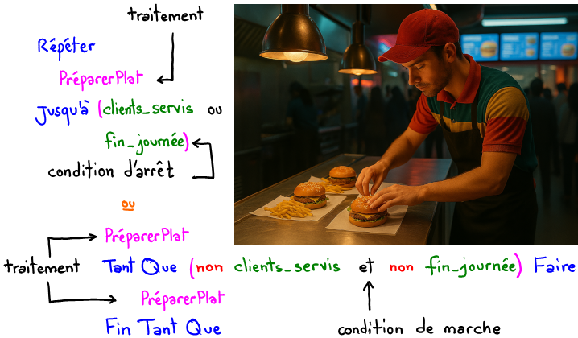
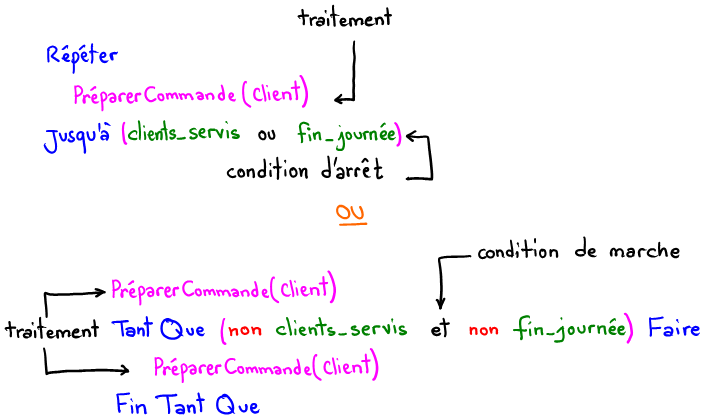
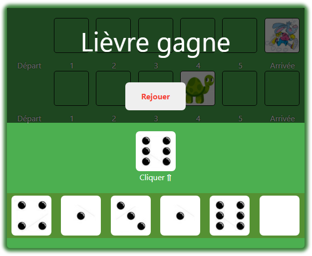
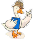

Module 5 : Structures itératives à condition d'arrêt
Situations
Fast-food

Prépartion de plats dans un fast-food
Combien de plats cet employé doit-il préparer durant les horaires de travail ?
Le nombre de plats est inconnu à l'avance. Il dépend du nombre de clients et de les
horaires du travail de l'employé.
Exprimer cette situation algorithmiquement sachant que l'on dispose d'une opération nommée
PréparerCommande(client) pour préparer la commande du client client.

Nombre de lancées de dé
Choisir un nombre de 1 à 6. Lancer un dé 🎲 autant de fois qu'il faut pour obtenir ce nombre. Enfin, afficher
le nombre de lancée nécessaires.
Ecrire l'algorithme d'un programme qui simule cette situation.
Solution : Répéter
Version 1
Algorithme Nombre_Lancées
Début
Ecrire("Un nombre [1, 6] ? ") ; Lire (nb)
nbl ← 0
Répéter
nbl ← nbl + 1
de ← aléa(1, 6)
Ecrire("Lancée", nbl, ":", de)
Jusqu'à de = nb
Ecrire("Nombre de lancée :", nbl)
Fin
TDO
Objet
Type
nb, nbl, de
entier
Solution : TantQue
Version 2
Algorithme Nombre_Lancées2
Début
Ecrire("Un nombre [1, 6] ? ") ; Lire (nb)
nbl ← 1
de ← aléa(1, 6)
Ecrire("Lancée", nbl, ":", de)
TantQue de ≠ nb Faire
nbl ← nbl + 1
de ← aléa(1, 6)
Ecrire("Lancée", nbl, ":", de)
Fin TantQue
Ecrire("Nombre de lancée :", nbl)
Fin
TDO
Objet
Type
nb, nbl, de
entier
Saisie contrôlée
Proposer les algorithmes et les implémentations en Python, en utilisant les boucles Répéter … Jusqu'à, puis
en utilisant la boucle Tant Que, des situations suivantes :
Saisir un nombre n strictement positif.
Saisir un nombre n entre 10 et 50.
Saisir un nombre nimpair contenant au moins une fois le chiffre 6.
Saisir une chaîne de caractère ch d'une longueur comprise entre 5 et 10 caractères et qui
contient au moins une fois la lettre "A".
Saisir une chaîne de caractère numérique non vide ch.
Solution
Saisir un nombre n strictement positif.
Répéter
Ecrire("Donner n (n > 0) ? ") ; Lire(n)
Jusqu'à n > 0
Ecrire("Donner n (n > 0) ? ") ; Lire(n)
TantQue n ≥ 0 Faire
Ecrire("Donner n (n > 0) ? ") ; Lire(n)
Fin TantQue
Saisir un nombre n entre 10 et 50.
Répéter
Ecrire("Donner n (10 ≤ n ≤ 50) ? ") ; Lire(n)
Jusqu'à 10 ≤ n ≤ 50
Ecrire("Donner n (10 ≤ n ≤ 50) ? ") ; Lire(n)
TantQue n < 10 ou n > 50 Faire
Ecrire("Donner n (10 ≤ n ≤ 50) ? ") ; Lire(n)
Fin TantQue
Saisir un nombre nimpair contenant au moins une fois le chiffre 6.
Répéter
Ecrire("Donner n ? ") ; Lire(n)
Jusqu'à (n mod 2 = 1) et (Pos("6", ConvCh(n)) ≠ -1)
Ecrire("Donner n ? ") ; Lire(n)
TantQue (n mod 2 = 0) ou (Pos("6", ConvCh(n)) = -1) Faire
Ecrire("Donner n ? ") ; Lire(n)
Fin TantQue
Saisir une chaîne de caractère ch d'une longueur comprise entre 5 et 10 caractères et qui
contient au moins une fois la lettre "A".
Répéter
Ecrire("Donner ch ? ") ; Lire(ch)
Jusqu'à (5 ≤ Long(ch) ≤ 10) et (Pos("A", Majus(ch)) ≠ -1)
Ecrire("Donner ch ? ") ; Lire(ch)
TantQue (Long(ch) < 5) ou (Long(ch) > 10) ou (Pos("A", Majus(ch)) = -1) Faire
Ecrire("Donner ch ? ") ; Lire(ch)
Fin TantQue
Saisir une chaîne de caractère numérique non vide ch.
Répéter
Ecrire("Donner ch ? ") ; Lire(ch)
Jusqu'à (ch ≠ "") et EstNum(ch)
Ecrire("Donner ch ? ") ; Lire(ch)
TantQue (ch = "") ou (non EstNum(ch)) Faire
Ecrire("Donner ch ? ") ; Lire(ch)
Fin TantQue
Résumé
Structure itératives à condition d'arrêt
Répéter ... Jusqu'à
Répéter
// Traitements
Jusqu'à condition
# Traitements
while not condition:
# Traitements
Exemple
Répéter
Ecrire("Donner n ? ") ; Lire(n)
Jusqu'à 5 ≤ n ≤ 50
n = int(input("Donner n ? "))
while n < 5 or n > 50:
n = int(input("Donner n ? "))
TantQue ... Faire
TantQue condition Faire
// Traitements
Fin TantQue
while condition:
# Traitements
Exemple
s ← 0
TantQue n ≠ 0 Faire
s ← s + n mod 10
n ← n div 10
Fin TantQue
s = 0
while n != 0:
s = s + n % 10
n = n // 10
Renforcement
Lancées de dés ★
Ecrire l'algorithme d'un programme qui calcule le nombre de lancées de dé 🎲 pour :
obtenir deux fois successives le nombre six. ⚅ puis ⚅
obtenir deux nombre successifs : l'ordre n'est pas important.
⚀ puis ⚁
⚁ puis ⚂
⚂ puis ⚃
⚃ puis ⚄
⚄ puis ⚅
que la somme des valeurs obtenues dans deux lancées successives soit égal à 7.
⚀ + ⚅
⚁ + ⚄
⚂ + ⚃
⚃ + ⚂
⚄ + ⚁
⚅ + ⚀
Exécution manuelle ★
Soit la séquence algorithmique suivante, avec n est un entier naturel positif :
nb ← 0
TantQue n ≠ 0 Faire
nb ← nb + 1
n ← n div 10
Fin TantQue
Travail demandé
Calculer la valeur finale de nb pour les valeurs suivantes de n :
n
3
98
216
9547
nb
Quel est le rôle de la séquence précédente.
Ecrire une séquence algorithmique équivalente sans utiliser une boucle.
Exécution Manuelle 2 ★
Question 1
Soit la séquence suivante :
TantQue a ≠ b faire
Si a > b Alors
a ← a - b
Sinon
b ← b - a
Fin Si
Fin TantQue
Travail demandé
Calculer les valeurs finales de a et b dans les cas suivants :
a = 24, b = 40
a = 75, b = 45
En déduire le rôle de la séquence
Question 2
Soit la séquence suivante :
Si a > b Alors
aux ← a
a ← b
b ← aux
Fin Si
p ← b
TantQue p mod a ≠ 0 Faire
p ← p + b
Fin TantQue
Travail demandé
Calculer la valeur finale de p dans les cas suivants :
a = 24, b = 40
a = 75, b = 45
En déduire le rôle de la séquence
Question 3
Soit la séquence suivante :
i ← 0
Répéter
test ← "A" ≤ Majus(ch[i]) ≤ "Z" ou ch[i] = " "
i ← i + 1
Jusqu'à non test ou i = Long(ch)
Travail demandé
Calculer la valeur finale de test dans les cas suivants :
ch = "We can"
ch = "Goodluck"
ch = "I ♥ U"
ch = "R'n'R"
En déduire le rôle de la séquence
Devine mon nombre ★★
Ecrire l'algorithme d'un programme qui choisit un nombre entre 1 et 100 et l'utilisateur devra le deviner en
moins de 7 essais.
Exemple 1
Le nombre à trouver est 21
Essai n°1 : votre proposition ? 50
Plus petit que 50.
Essai n°2 : votre proposition ? 25
Plus petit que 25.
Essai n°3 : votre proposition ? 12
Plus grand que 12.
Essai n°4 : votre proposition ? 18
Plus grand que 18.
Essai n°5 : votre proposition ? 21
Félicitations! Trouvé.
Exemple 2
Le nombre à trouver est 59
Essai n°1 : votre proposition ? 20
Plus grand que 20.
Essai n°2 : votre proposition ? 30
Plus grand que 30.
Essai n°3 : votre proposition ? 40
Plus grand que 40.
Essai n°4 : votre proposition ? 50
Plus grand que 50.
Essai n°5 : votre proposition ? 60
Plus petit que 60.
Essai n°6 : votre proposition ? 51
Plus grand que 51.
Essai n°7 : votre proposition ? 55
Plus grand que 55.
Perdu! Le nombre caché est : 59.
Exemple 3
Le nombre à trouver est 89
Essai n°1 : votre proposition ? 99
Plus petit que 99.
Essai n°2 : votre proposition ? 88
Plus grand que 88.
Essai n°3 : votre proposition ? 90
Plus petit que 90.
Essai n°4 : votre proposition ? 89
Félicitations! Trouvé
Le lièvre et la tortue ★★
Règles du jeu
On lance un dé :
Si on obtient 6, le lièvre gagne
Si on obtient une autre valeur, la tortue avance d'un pas
Si la tortue a avancé de six cases elle gagne, sinon on rejoue une autre fois.
Lièvre
Tortue
Dé
Simulation
Cliquer ⇑
{{winner_message}}

Simulation du jeu lièvre et tortue
Travail demandé
Ecrire l'algorithme du programme permettant de simuler ce jeu.
Jeu de l'oie ★★
Principe de jeu
Le jeu de l'oie est un jeu classique qui se joue à 2, 3 ou 4 joueurs.
Chaque joueur, à son tour, lance un dé à six faces et avance son pion du nombre tiré.
Le gagnant est celui qui atteint la case d'arrivée (case 63).
On désire implémenter une version simplifiée, sans pièges, de ce jeu où un joueur humain joue tout seul.
La case d'arrivée est la case 32.
Remarque : Si la nouvelle position du joueur dépasse la case finale il recule au lieu
d'avancer.
Exemple : Je suis dans la position 27 et j'obtiens 6, je recule à la position 21.
{{winner_message}}

⇐ Click
{{movement}}
Travail demandé
Ecrire l'algorithme du programme permettant de simuler ce jeu.